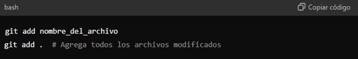
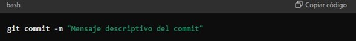
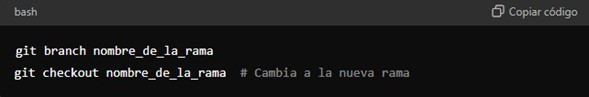
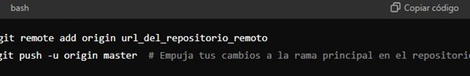
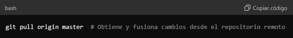

¿Qué es GIT?
GIT es un sistema de control de versiones distribuido ampliamente utilizado para el seguimiento de cambios en el código fuente durante el desarrollo de software. Fue creado por Linus Torvalds en 2005 para gestionar el desarrollo del kernel de Linux y desde entonces se ha convertido en una herramienta fundamental en la industria del desarrollo de software
¿Para qué sirve GIT?
GIT ofrece varios beneficios y funcionalidades clave que facilitan la colaboración y la gestión del código fuente:
1. Control de versiones: GIT permite mantener un historial completo de cambios en el código, lo que facilita la reversión a versiones anteriores, la comparación de cambios y la gestión de ramificaciones (branching) y fusiones (merging).
2. Colaboración: Facilita el trabajo en equipo al permitir que múltiples desarrolladores trabajen en el mismo proyecto de forma simultánea. Cada desarrollador puede trabajar en su propia copia del repositorio (clonado) y luego integrar sus cambios al repositorio principal de manera controlada. 3. Gestión de ramificaciones: Permite crear ramas (branches) para desarrollar nuevas funcionalidades o solucionar problemas sin afectar el código principal (rama principal o "master"). Las ramas pueden fusionarse posteriormente de manera ordenada. 4. Seguridad y consistencia: GIT gestiona de manera efectiva conflictos que puedan surgir cuando varios desarrolladores modifican el mismo archivo al mismo tiempo. También ofrece mecanismos para etiquetar versiones estables (tags) y establecer políticas de acceso y control de permisos. 5. Flexibilidad y distribución: Como sistema de control de versiones distribuido, cada desarrollador tiene una copia completa del repositorio localmente. Esto permite trabajar sin conexión a internet y sincronizar cambios posteriormente.Conceptos Fundamentales de GIT
Para utilizar GIT de manera efectiva, es importante comprender algunos conceptos clave:
1. Repositorio: Es el almacenamiento centralizado donde GIT guarda el historial de versiones y los archivos del proyecto. Puede ser local (en tu máquina) o remoto (en un servidor como GitHub, GitLab, Bitbucket, etc.).
2. Clonar: Hacer una copia local de un repositorio remoto en tu máquina para trabajar con él. 3. Commit: Guardar cambios realizados en archivos específicos dentro del repositorio. Cada commit tiene un mensaje descriptivo que explica los cambios realizados. 4. Branching (ramificación): Crear ramas permite trabajar en paralelo en nuevas funcionalidades o solucionar problemas sin afectar la rama principal (usualmente llamada master o main). 5. Merging (fusionar): Integrar cambios de una rama (branch) a otra. GIT gestiona automáticamente los cambios y resuelve conflictos si es necesario. 6. Pull Request: En plataformas como GitHub, un pull request es una solicitud para fusionar cambios realizados en una rama (branch) a otra (generalmente a la rama principal). Facilita la revisión del código y la colaboración entre desarrolladores.Cómo Utilizar GIT
Configuración inicial:
Antes de empezar a utilizar GIT, es recomendable configurar tu identidad (nombre y correo electrónico) utilizando los siguientes comandos en la terminal

2. Agregar archivos al repositorio:
Antes de hacer commit, debes agregar los archivos al área de preparación (staging area). Puedes agregar archivos específicos o todos los archivos modificados con:
3. Hacer commit de cambios:
Después de agregar los archivos al área de preparación, realiza un commit para guardar los cambios con un mensaje descriptivo:
4. Trabajar con ramas:
Para crear una nueva rama y cambiar a ella: - Puedes trabajar en la nueva rama, hacer commits y luego fusionarla con la rama principal utilizando git merge
5. Sincronización con repositorio remoto:
Si trabajas en un proyecto colaborativo, es recomendable sincronizar tu repositorio local con un repositorio remoto (como GitHub):
6. Actualizar y fusionar cambios:
Para actualizar tu repositorio local con los cambios más recientes del repositorio remoto
